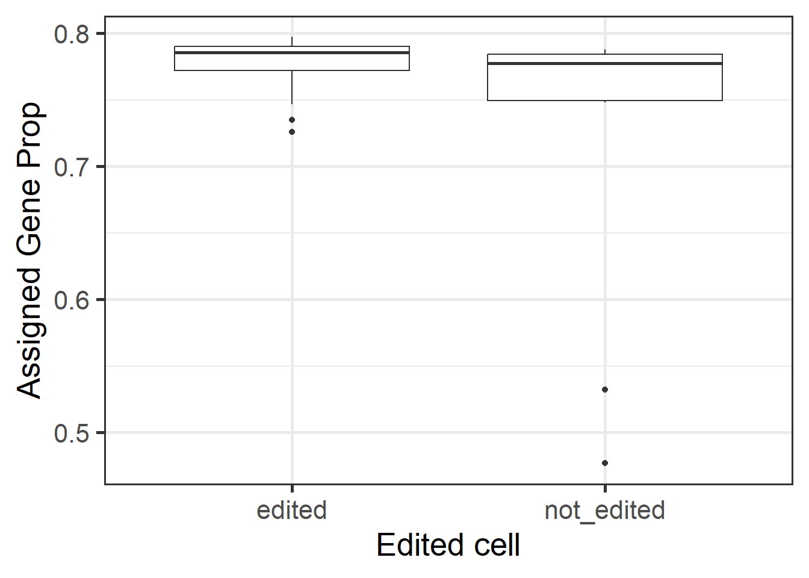
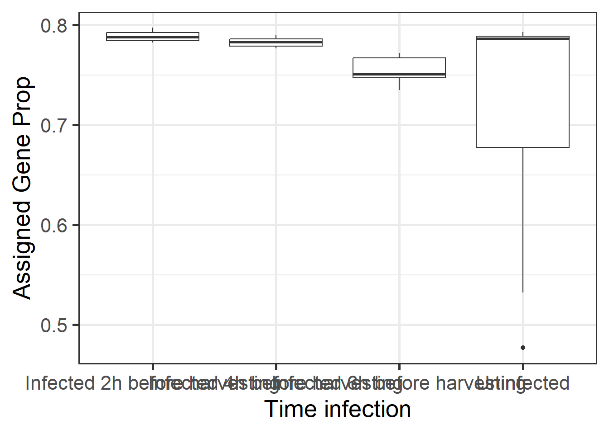
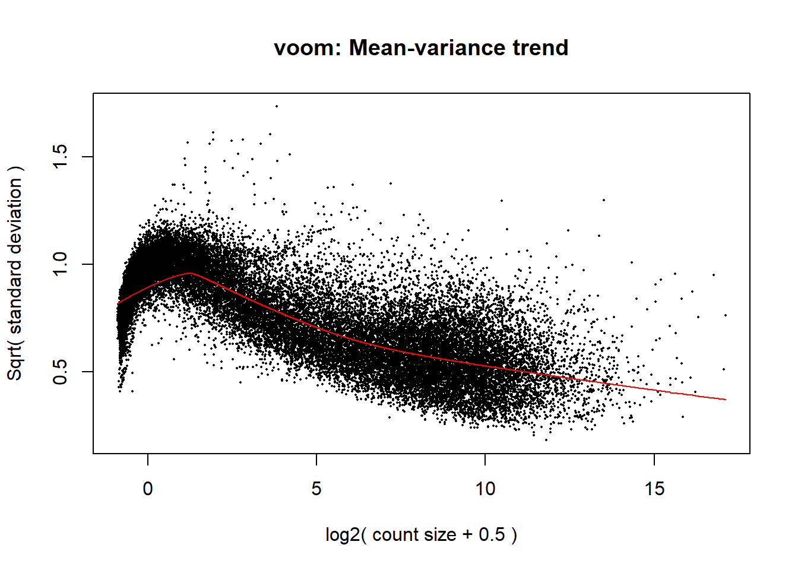
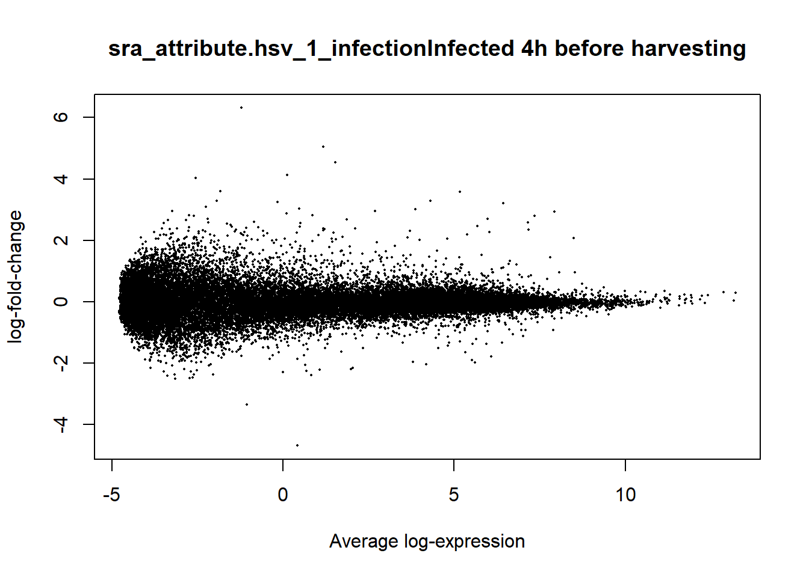
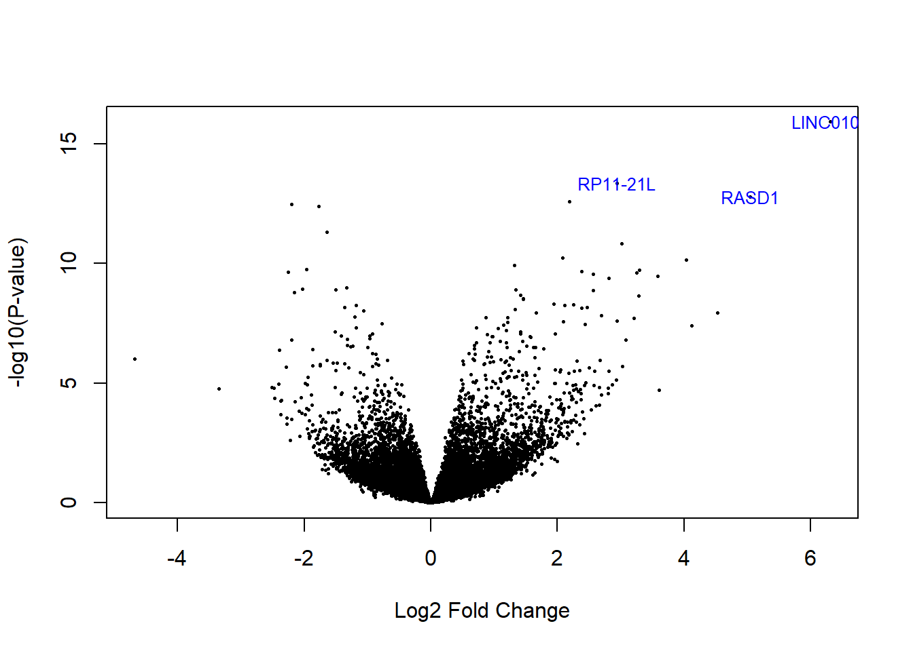
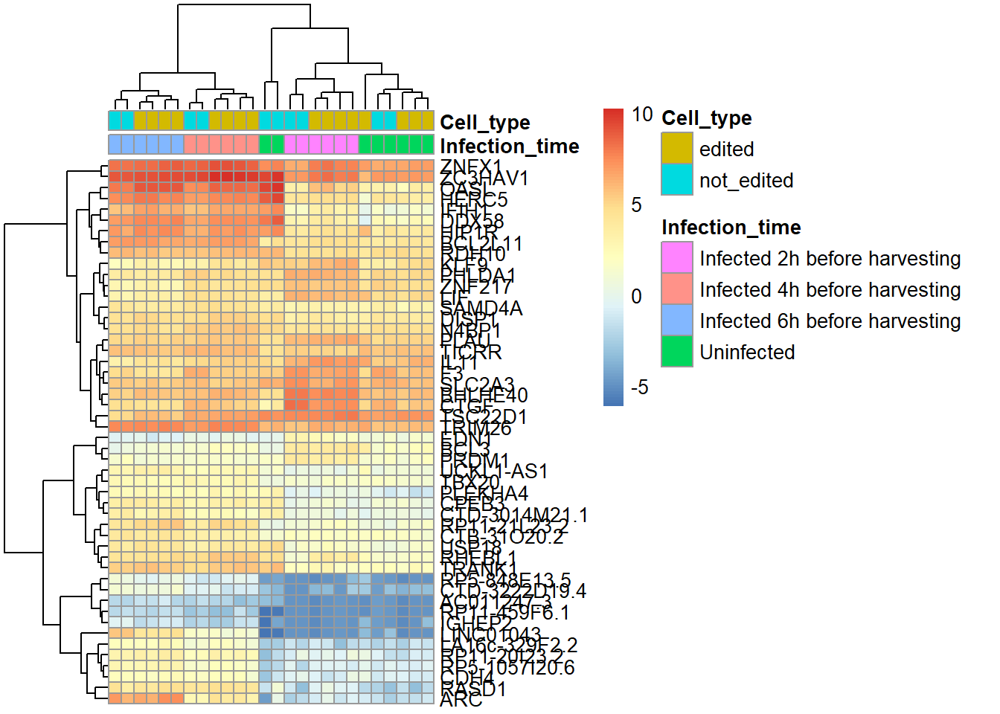
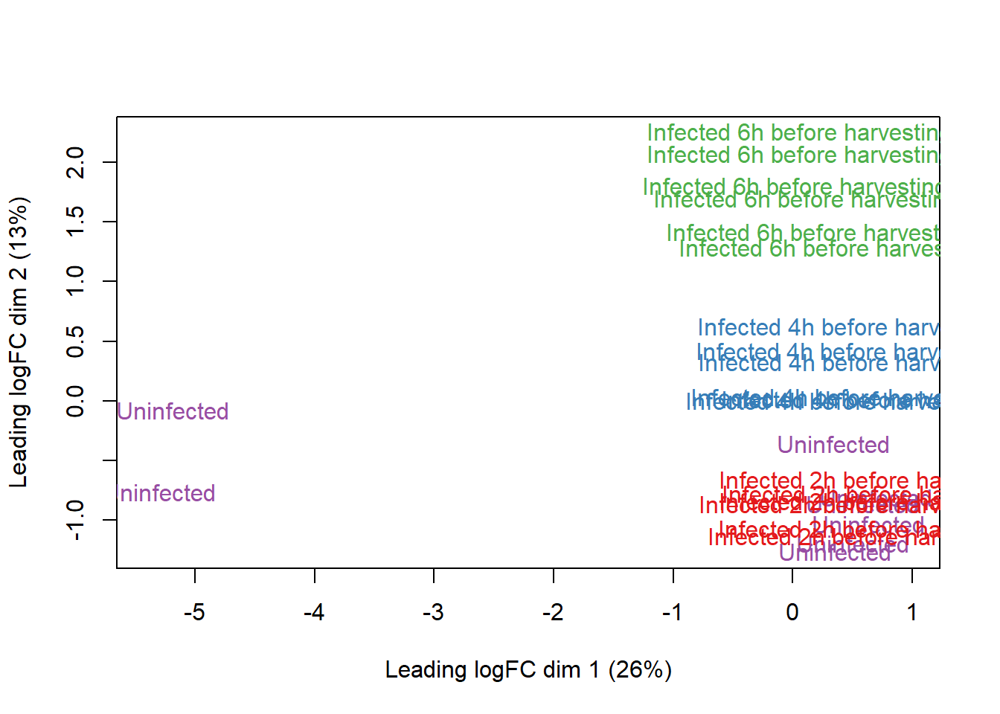
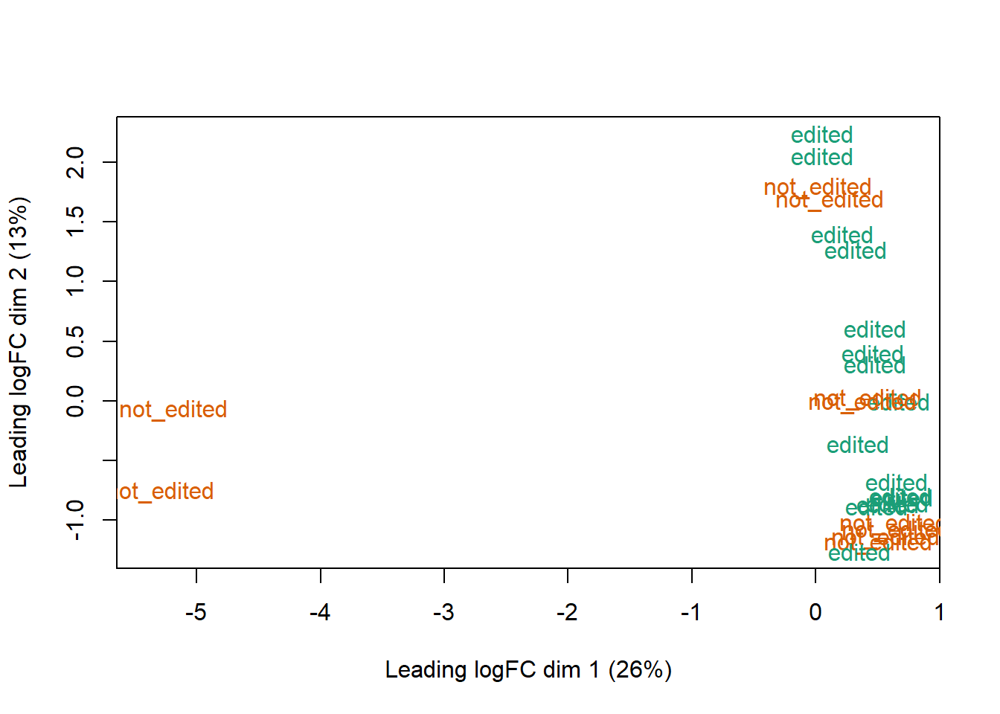

Chapter 6 Análisis de datos
6.1 Expresión diferencial
Visualizar la expresión diferencial de acuerdo a cada atributo.
# Boxplot por tipo de célula.
ggplot(as.data.frame(colData(rse_gene_SRP102444)), aes(y = assigned_gene_prop, x = edited_cell)) +
geom_boxplot() +
theme_bw(base_size = 20) +
ylab("Assigned Gene Prop") +
xlab("Edited cell")
# Boxplot por momento de infección
ggplot(as.data.frame(colData(rse_gene_SRP102444)), aes(y = assigned_gene_prop, x = sra_attribute.hsv_1_infection)) +
geom_boxplot() +
theme_bw(base_size = 20) +
ylab("Assigned Gene Prop") +
xlab("Time infection")
6.2 Modelo estadístico
De acuerdo a las observaciones previas es posible establecer un modelo estadístico utilizando las variables edited_cell e hsv_1_infection.
mod <- model.matrix(~ sra_attribute.hsv_1_infection + edited_cell + assigned_gene_prop,
data = colData(rse_gene_SRP102444)
)
colnames(mod)## [1] "(Intercept)"
## [2] "sra_attribute.hsv_1_infectionInfected 4h before harvesting"
## [3] "sra_attribute.hsv_1_infectionInfected 6h before harvesting"
## [4] "sra_attribute.hsv_1_infectionUninfected"
## [5] "edited_cellnot_edited"
## [6] "assigned_gene_prop"Analizar los datos estadísticos de la expresión diferencial.

# Ajustar datos
eb_results <- eBayes(lmFit(vGene))
de_results <- topTable(
eb_results,
coef = 2,
number = nrow(rse_gene_SRP102444),
sort.by = "none"
)
dim(de_results)## [1] 31657 16## source type bp_length phase gene_id
## ENSG00000223972.5 HAVANA gene 1735 NA ENSG00000223972.5
## ENSG00000278267.1 ENSEMBL gene 68 NA ENSG00000278267.1
## ENSG00000227232.5 HAVANA gene 1351 NA ENSG00000227232.5
## ENSG00000243485.5 HAVANA gene 1021 NA ENSG00000243485.5
## ENSG00000237613.2 HAVANA gene 1219 NA ENSG00000237613.2
## ENSG00000239945.1 HAVANA gene 1319 NA ENSG00000239945.1
## gene_type gene_name level
## ENSG00000223972.5 transcribed_unprocessed_pseudogene DDX11L1 2
## ENSG00000278267.1 miRNA MIR6859-1 3
## ENSG00000227232.5 unprocessed_pseudogene WASH7P 2
## ENSG00000243485.5 lincRNA MIR1302-2HG 2
## ENSG00000237613.2 lincRNA FAM138A 2
## ENSG00000239945.1 lincRNA RP11-34P13.8 2
## havana_gene tag logFC AveExpr
## ENSG00000223972.5 OTTHUMG00000000961.2 <NA> 1.25221709 -3.438753
## ENSG00000278267.1 <NA> <NA> -0.45470084 -4.238099
## ENSG00000227232.5 OTTHUMG00000000958.1 <NA> 0.06778948 2.298965
## ENSG00000243485.5 OTTHUMG00000000959.2 ncRNA_host 0.83618857 -3.590023
## ENSG00000237613.2 OTTHUMG00000000960.1 <NA> 0.39685734 -4.707564
## ENSG00000239945.1 OTTHUMG00000001097.2 overlapping_locus 0.62329540 -4.327404
## t P.Value adj.P.Val B
## ENSG00000223972.5 2.1643355 0.04026904 0.3934559 -3.803283
## ENSG00000278267.1 -0.9012728 0.37611126 0.8720104 -5.559589
## ENSG00000227232.5 0.2834396 0.77919209 0.9623578 -6.472159
## ENSG00000243485.5 1.4500252 0.15957895 0.6913647 -4.886226
## ENSG00000237613.2 1.2598757 0.21943911 0.7671918 -5.264621
## ENSG00000239945.1 1.4763372 0.15243657 0.6812576 -4.938413

En este último plot es posible observar los genes más expresados en células infectadas por el virus del herpes tipo 1.
Analizar patrones de expresión de genes.
# Extraer valores de los genes de interés
exprs_heatmap <- vGene$E[rank(de_results$adj.P.Val) <= 50, ]
# Crear una tabla con información de las muestras y con nombres de columnas más amigables
df <- as.data.frame(colData(rse_gene_SRP102444)[, c("sra_attribute.hsv_1_infection", "edited_cell")])
colnames(df) <- c("Infection_time", "Cell_type")
# Cambiar los identificadores por los nombres de los genes.
nombres <- rownames(de_results)
rownames(exprs_heatmap) <- de_results$gene_name[match(rownames(exprs_heatmap), nombres)]# Realizar un heatmap
pheatmap(
exprs_heatmap,
cluster_rows = TRUE,
cluster_cols = TRUE,
show_rownames = TRUE,
show_colnames = FALSE,
annotation_col = df
)
# Conviertiendo los grupos de infección en colores
col.group <- df$Infection_time
levels(col.group) <- brewer.pal(nlevels(col.group), "Set1")
col.group <- as.character(col.group)
# MDS por momento de infección
plotMDS(vGene$E, labels = df$Infection_time, col = col.group)
# Conviertiendo los grupos de tipo de celula en colores
col.sex <- df$Cell_type
levels(col.sex) <- brewer.pal(nlevels(col.sex), "Dark2")## Warning in brewer.pal(nlevels(col.sex), "Dark2"): minimal value for n is 3, returning requested palette with 3 different levelscol.sex <- as.character(col.sex)
# MDS por tipo de célula
plotMDS(vGene$E, labels = df$Cell_type, col = col.sex)